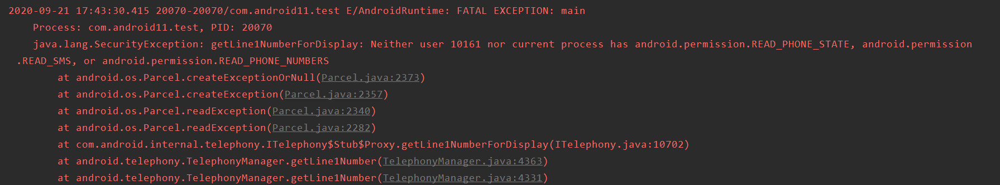

电话号码权限
Android 11主要改动就是要使用下列两个方法时
TelephonyManager 类和 TelecomManager 类中的 getLine1Number() 方法。
TelephonyManager 类中不受支持的 getMsisdn() 方法。
READ_PHONE_STATE权限不管用了，需要READ_PHONE_NUMBERS权限才行。
<manifest>
<!-- Grants the READ_PHONE_STATE permission only on devices that run
Android 10 (API level 29) and lower. -->
<uses-permission android:name="READ_PHONE_STATE"
android:maxSdkVersion="29" />
<uses-permission android:name="READ_PHONE_NUMBERS" />
</manifest>
使用以下代码在android 11模拟器上获取电话号码
private fun getPhoneNumber() {
if (ContextCompat.checkSelfPermission(context!!, Manifest.permission.READ_PHONE_STATE) != PackageManager.PERMISSION_GRANTED) {
ActivityCompat.requestPermissions(activity!!,
arrayOf(Manifest.permission.READ_PHONE_STATE), 100)
} else {
val tm = context?.applicationContext?.getSystemService(Context.TELEPHONY_SERVICE) as TelephonyManager
val phoneNumber = tm?.line1Number
Toast.makeText(context, phoneNumber, Toast.LENGTH_LONG).show()
}
}
直接闪退 
把READ_PHONE_STATE改成READ_PHONE_NUMBERS就可以获取成功